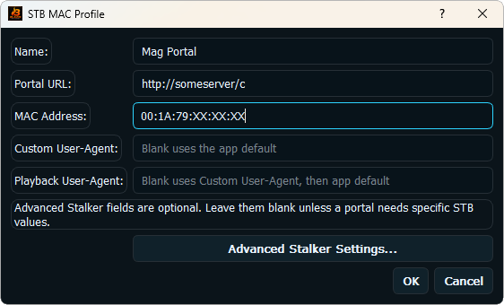

Live TV and categories
Channels and category groups appear only when the portal returns compatible data.
BLAZIN IPTV Player provides a dedicated Windows profile for users who already have authorized Stalker Portal details from a legal source.
Profile setup
Portal systems can require a specific URL, MAC-style identity, request user agent, or device profile values. Enter only the values assigned to your authorized source, then save the profile for reuse.

Source-provided data
Channels and category groups appear only when the portal returns compatible data.
VOD and episodic sections depend on the portal endpoints and account access.
Guide listings, logos, and posters are displayed when compatible metadata is supplied.
Compatibility checks
Most users should begin with the basic portal profile. Add user-agent, device, version, or related fields only when your source documentation requires a specific value. Incorrect values can prevent login or playback.
Troubleshooting
Related setup pages
Review the related portal and MAC-style workflow.
Learn how compatible guide data is displayed.
See the complete BLAZIN source and playback workflow.